← Projetos da Etec
Programação Web III
Midnight Racing
Site com login social e um jogo de corrida em primeira pessoa desenhado em canvas, com portal para outros mundos e um modo copiloto.
- Matéria
- Programação Web III
- Dupla
- Thiago Proença e Frederick Ferreira
- Escola
- Etec Dr. Demétrio Azevedo Jr.
- Tecnologias
- Next.js, Auth.js (OAuth), Canvas 2D
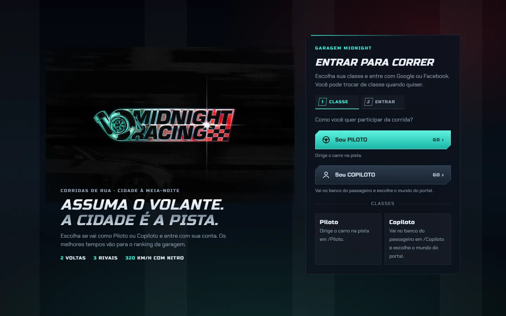
Como funciona
O jogador entra com a conta do Google ou do Facebook e escolhe a classe. A sessão é protegida em duas barreiras (proxy e verificação no servidor): o piloto só entra na pista e o copiloto só entra no banco do passageiro.
- Corrida de 2 voltas contra 3 rivais, com câmbio, nitro, batidas e cronômetro por volta.
- Portal: no fim da 1ª volta, a pista leva a corrida para outro mundo.
- Modo copiloto: um robô dirige e o usuário usa um contador Geiger para escolher o mundo numa roleta. Se ninguém escolher a tempo, o portal se abre no mundo infernal e o guardião encerra a corrida.
- Painel com perfil, garagem e ranking dos corredores.
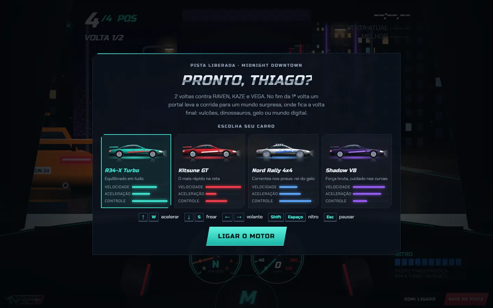
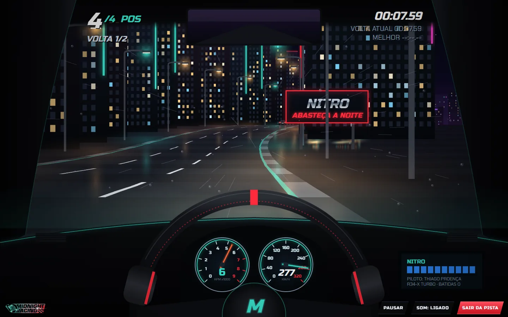
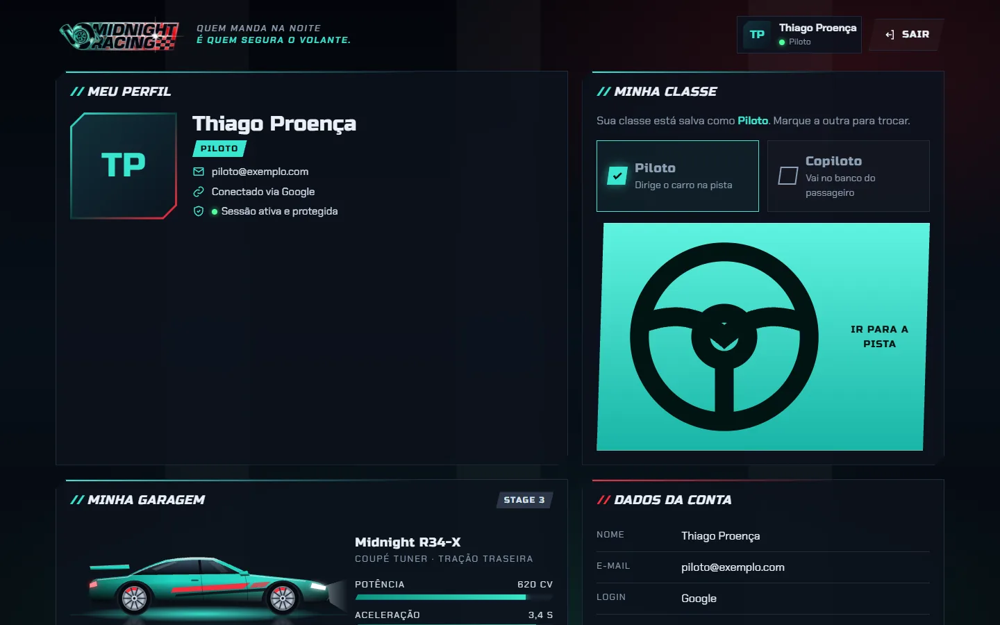
Os mapas
Cada mundo tem pista, cenário, cores e criaturas próprias, todos desenhados em canvas, sem imagens prontas.
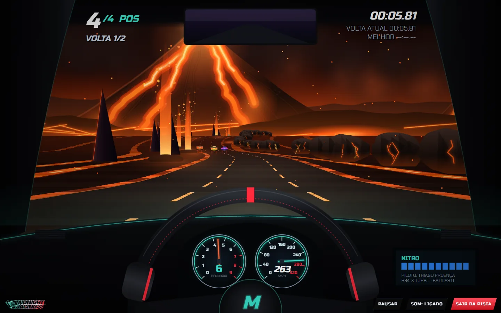
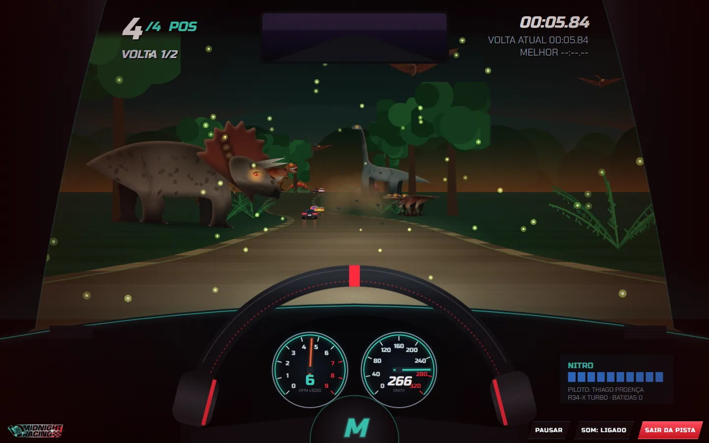
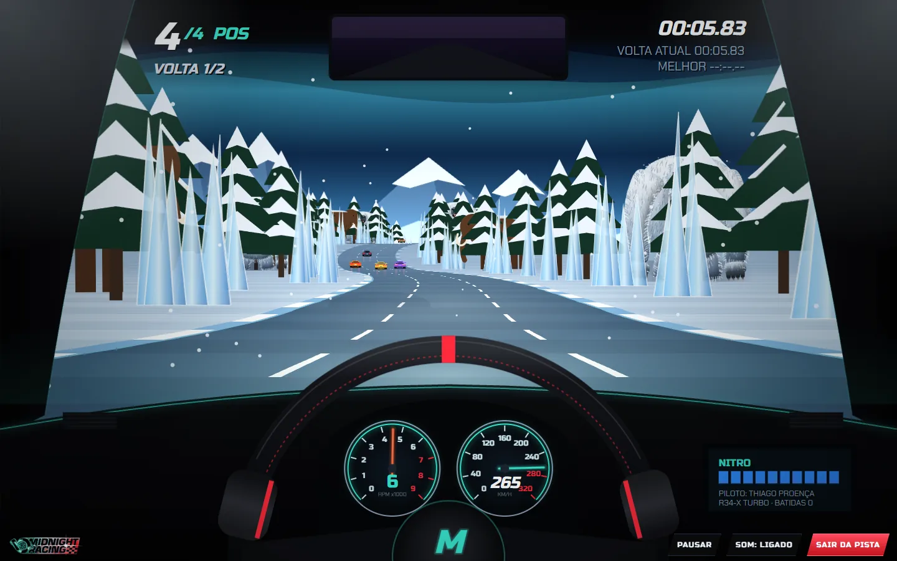
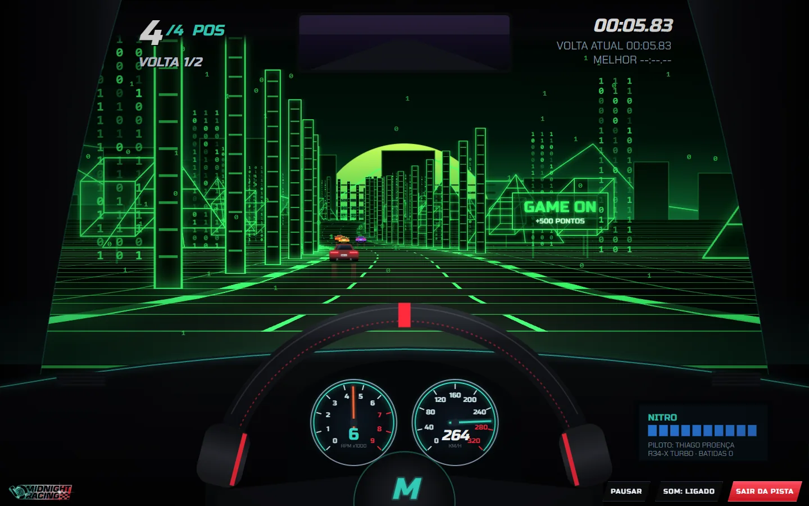
Modo copiloto
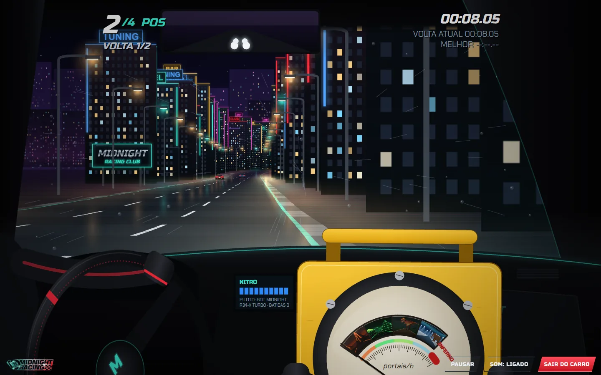
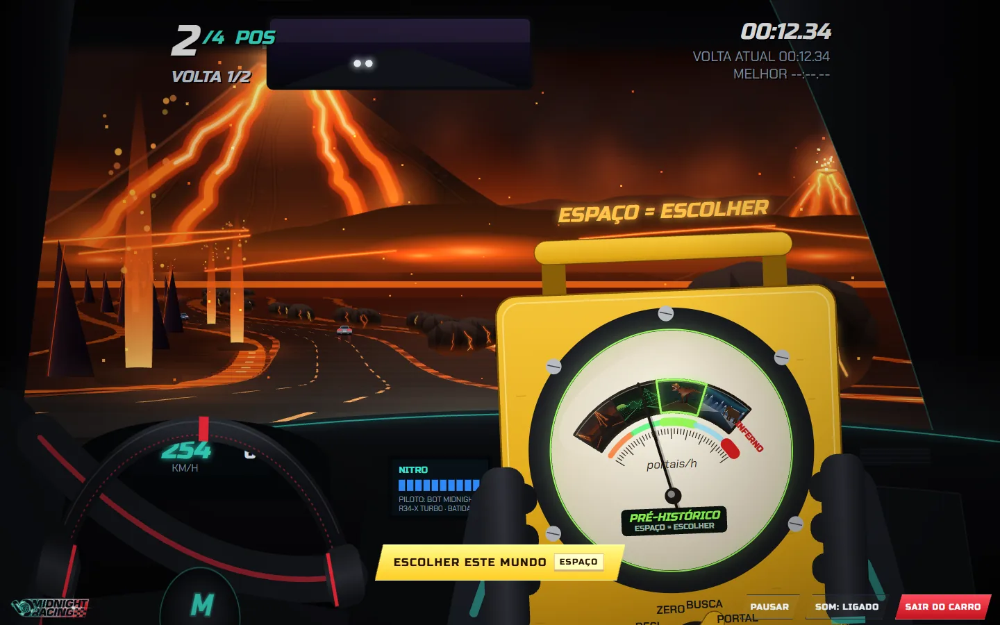
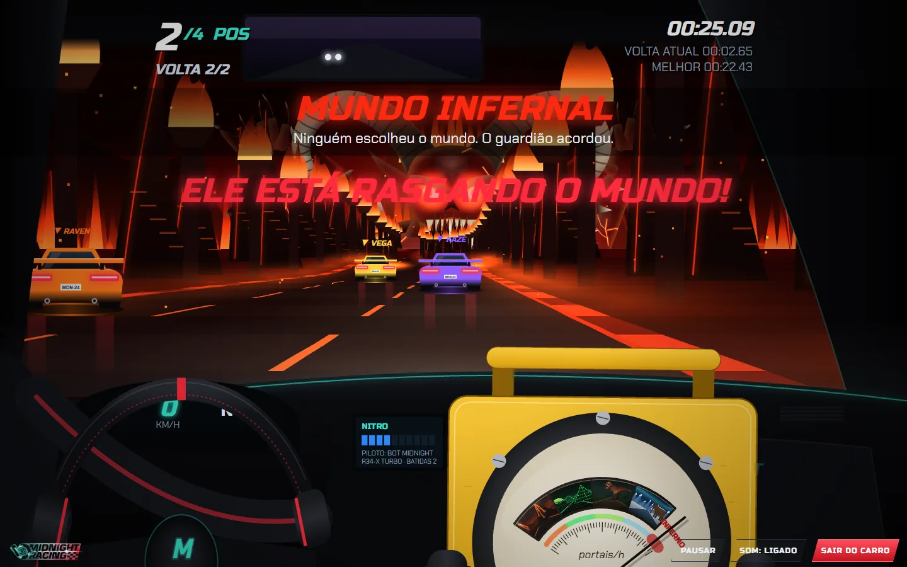
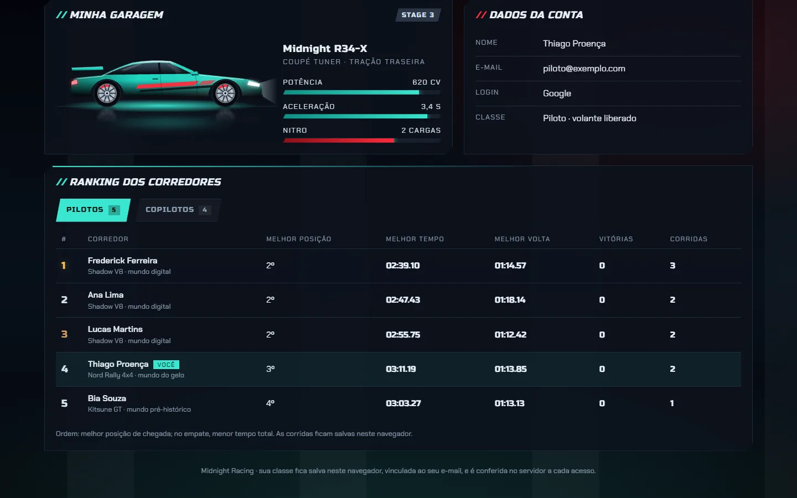